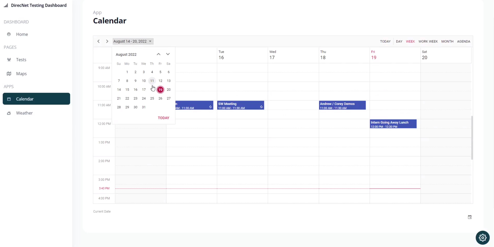
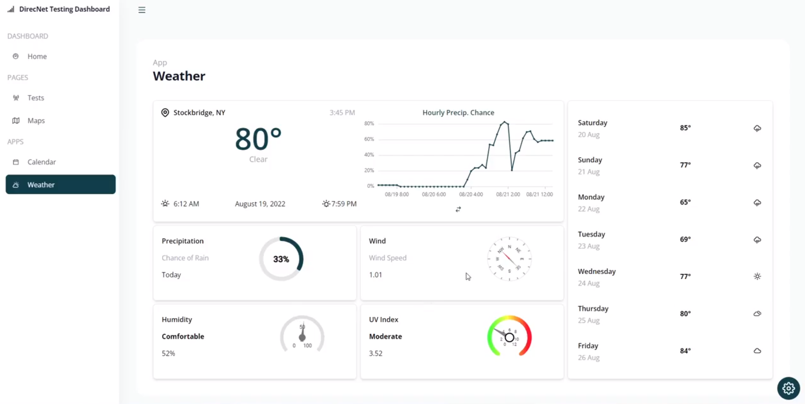

DirecNet Logging Application
Technologies Used:
- MongoDB
- React JS
- Express JS
- Node JS
- Microsoft Azure
- GitHub
Description:
This application was built using the MERN technology stack, for the intention of giving the DirecNet team a seamless dashboard to carry out field testing, standups, reproducible field tests, and more. Hosted through Microsoft Azure and their Cosmos DB, App Service, etc.
Application features include: Jira/BitBucket Server dynamic updates, tracking code commits/status, a full weather page, making test suites for future field tests, mapping location of said tests, and a fully integrated calendar and status widgets to integrate into team standups and meetings.
* Note: Confidential HII information/data has been blurred.
Dashboard
The Dashboard features Atlassian quick links, Latest Software build widgets, recent field tests, overviews of team status and progress, field testing conditions, and important calendar events.
Users can interact with each widget, adding, editing, or removing data entries which may correspond to what the team is working on, what they want to view, or redirect them to the corresponding page.
Tests Page
Users view the previous field tests in chronological order in a compact table view. Users can click on a table entry to view a more in depth view, order the table by a different category, or press the add button at the top to create a new test suite.
Users will go through and create a new test entry by clicking and editing each text entry. A default entry is populated with text entries the users can go through and edit/save at any time they need.
Maps Page

Similar to creating a new test suite, there is the ability to create a fixed maps scenario of the certain field test you are trying to perform over and over again. A maps Pane is pre populated where node actions (such as moving, linking, disconnecting, etc.), coordinates, colors, shapes, zoom, and more are customizable and can be edited/saved at any time.
These test scenes are then linked to a test suite when it is performed later on. Therefore, when a test is completed, we have complete control over replicating the scenario, node arrangement, actions, and more. Thus, This eliminates a multitude of variables that could cause a field test to be scrapped.
Calendar
The Calendar mini app is a full size version of the calendar widget on the Dashboard. Similar to Google Calendar, users can input, edit, and remove events on the calendar to signify important dates the team should keep note of.
This component has several abilities which come from the Syncfusion React library and allow the user to switch views, days they are viewing, drag and drop events, and more.
Weather
Lastly, the weather mini app is another full size version of a Dashboard widget. Data is parsed from an OpenWeatherAPI call to generate weather data in a dashboard format the user can view on the front end. In the settings, users have the ability to change the location that gets queried.
Features on this page include a graph display of the hourly breakdown (that can be switched to an hourly precipitation chance breakdown), a 7-day forecast on the right hand side, chance of rain, wind speed, humidity, and UV index. This page also incorporates Syncfusion React library components that have customizable and reusable properties.